id="js_content" style="">我们坚持一件事情，并不是因为这样做了会有效果，而是坚信，这样做是对的。
——哈维尔
今年的奥斯卡总体比较“稳”，加里·奥德曼的最佳男主实至名归。
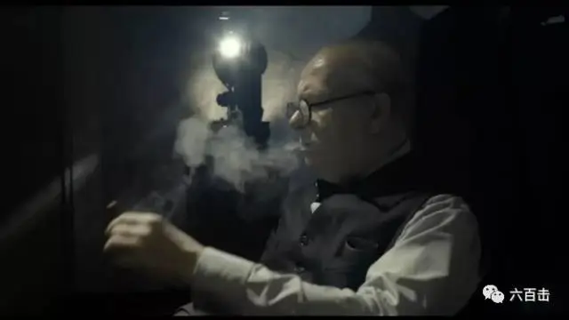
科恩嫂的最佳女主以及山姆·洛克威尔的最佳男配也是深得民心

诺兰虽然没能摘取最佳导演有点遗憾，但《敦刻尔克》获三项大奖，也说的过去。
最让人感动的是罗杰·狄金斯陪跑十四年终获最佳摄影，不过他本人似乎已经看开了。
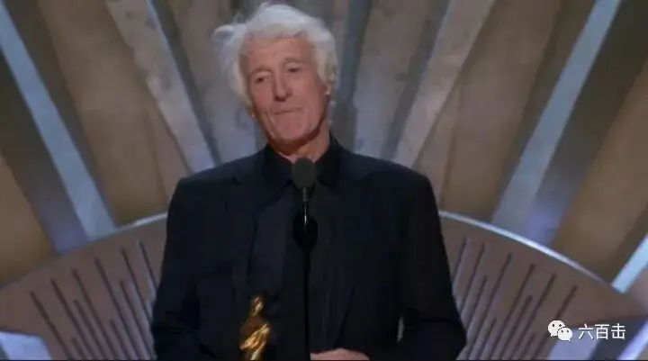
而本届奥斯卡，最让影迷难以接受的是，《水形无语》获最佳影片，而不是影迷呼声较高的《三块广告牌》。
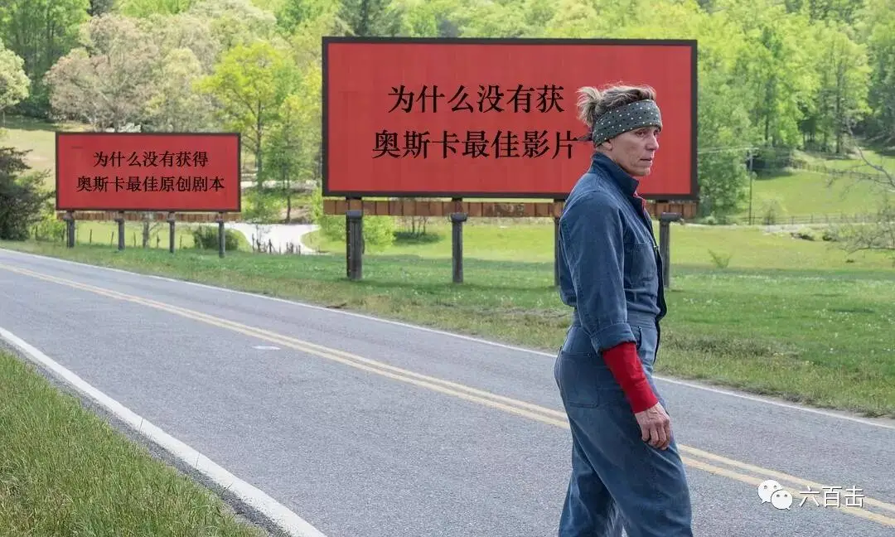
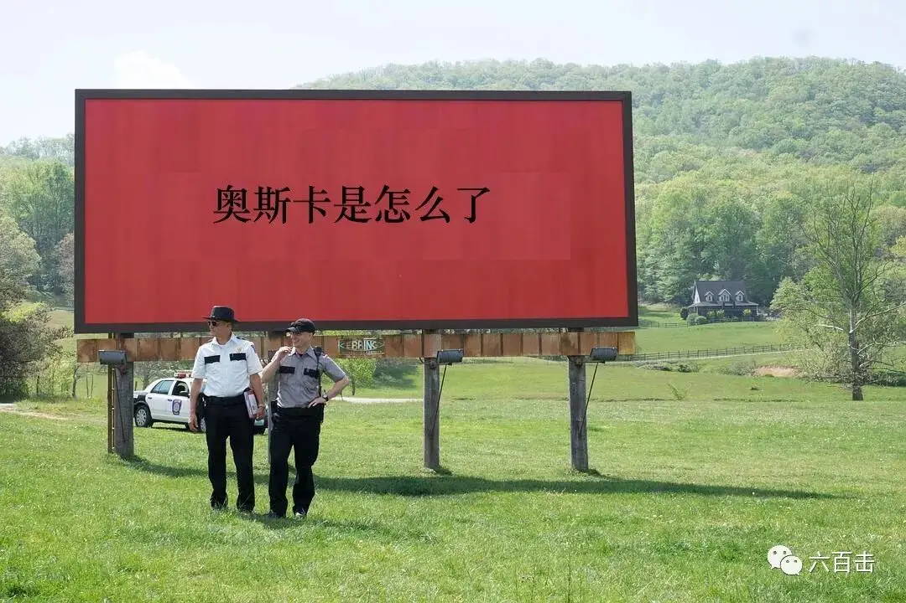
我们可以从豆瓣上直观的感受到这股强烈的反差，获最佳影片的《水形物语》豆瓣评分相当一般。
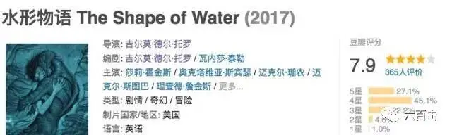
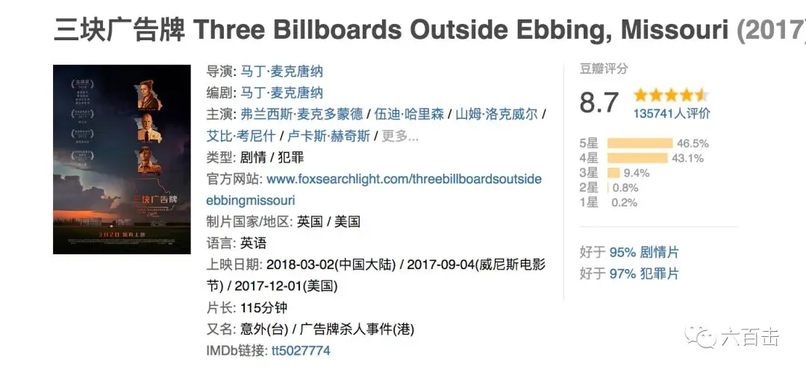
“陀螺”精心构造的暗黑人鱼恋，中国影迷似乎不买账，或者说难以接受，我自己看完之后，除了最后一个场景，基本上没有太大感觉。
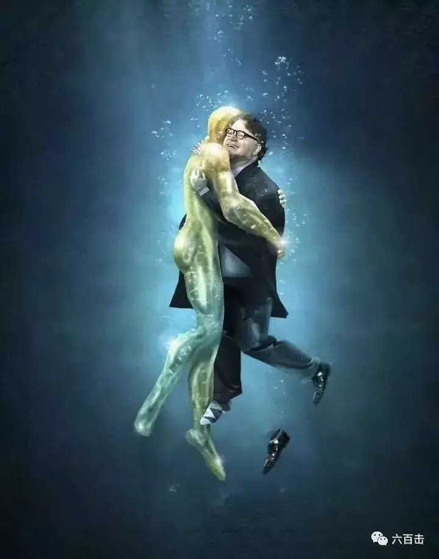
而从此前《水形物语》获威尼斯最佳影片金狮奖，并领跑奥斯卡13项提名来看，《水形物语》还是有很大的含金量，只是我们欣赏不来。
如果因为口味差异，我们也认了，但是最佳原创剧本给了《逃出绝命镇》，就更让人难以接受了，毕竟《逃出绝命镇》远逊于《万能钥匙》。
而《三块广告牌》精妙绝伦的剧作成就则有目共睹！！
不过有没有拿大奖并不会影响“广告牌”在影迷心中的地位。
毕竟这不是第一回，当年《肖申克的救赎》在《低俗小说》和《阿甘正传》的夹击下颗粒无收，但并不影响其长期居于IMDB和豆瓣的榜首，时间和观众会给出更准确的裁决。
今天，我们一起走进《三个广告牌》的世界。
-01- 三块广告牌
柯林嫂饰演的米尔德雷德是一位痛失爱女的母亲。
女儿被强奸甚至残忍杀害，面对悲剧，米尔德雷德并不是一个哭丧着脸、绝望无助的母亲，而是穿着一身汽车修理工连衣裙、挺着直直腰杆、霸气十足的女性。
米尔德雷德的脸上，你似乎都难以察觉到悲伤，甚至你都看不到情感的流露，她总是面无表情，但却用简洁犀利的言语和眼神向整个世界宣战。
因为这个世界没有给她希望，女儿惨死，警察长时间无法破案，凶手依然在逍遥法外，正义未得伸张。
而更严重的是大家似乎已经遗忘了这场悲剧，小镇里的人们依旧歌舞升平，似乎没有人在乎女儿的死以及逍遥法外的凶手。
于是，米尔德雷德用仅有的积蓄在三块广告牌上打了广告：
“爱女被强奸致死”
“凶手至今逍遥法外”
“威洛夫警长你到底想怎样”
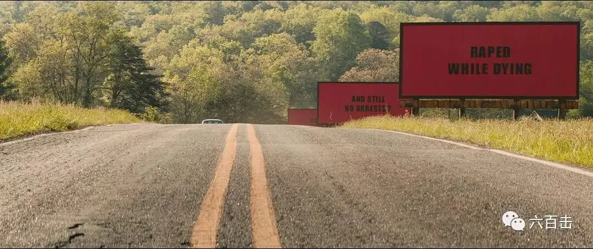
就像米尔德雷德给人的感觉一样，三句“广告词”简洁有力，像子弹一样射入到荒凉和冷漠中。
-02- 三个人
电影就像多古诺纸牌一样，由三块广告牌推开了整个剧情。
广告牌首先射向的是威洛夫警长，命案迟迟未破，威洛夫负有不可推卸的责任。
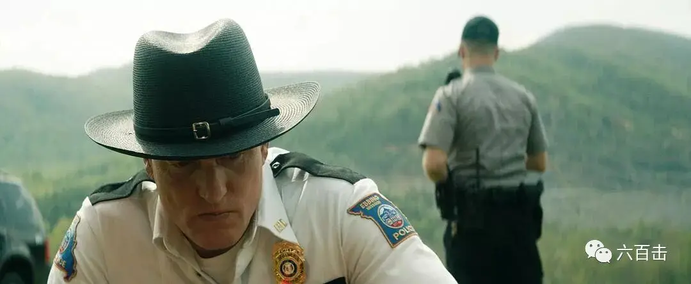
导演并没有将威洛夫设定为一位懒惰渎职甚至与凶手私通的反面人物，使电影流于善恶二元的俗套。
电影中每个人物都很复杂，并不能简单定义为好人或者坏人，所以更加贴近真实。
威洛夫是一位整天爆着粗口的警长，但是对自己的妻子和孩子却非常温柔，镇上每个人都知道威洛夫是一个好人，即使他没有成功破案。
事实上，威洛夫在米尔德雷德女儿的命案上已经竭尽全力，只是没有结果。
导演通过这样的设定，减缓了米尔德雷德声讨正义的“底气”，加增了“情有可原”的纠结：米尔德雷德如此的苛求是否有些不近人情？
情与理的纠结不仅仅留给了观众，更直接留给了小镇上的居民。
威洛夫为了小镇的安定奉献了一生，深受大家的爱戴，每个人都不忍心看着威洛夫因为这件事晚节不保甚至被百般刁难。
尤其是当大家知道威洛夫患有癌症、时日无多的时候，几乎所有人都站在了威洛夫的一边。
整个小镇都在敌视着米尔德雷德，即使米尔德雷德所做的事情是正确的，但是谁又真正在乎呢？
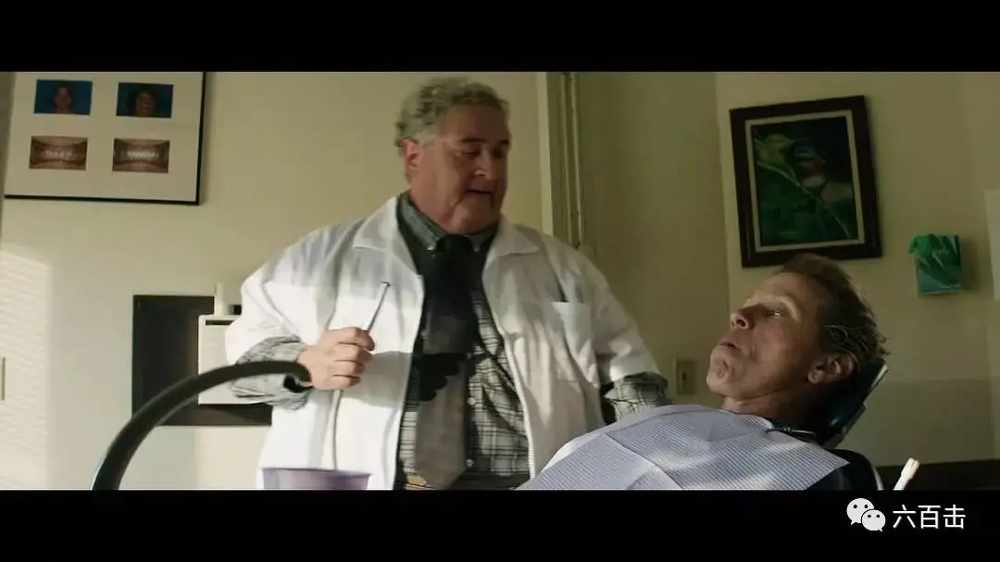
而威洛夫所经受的拷问和压力，则将子弹射向了威洛夫的副手狄克森，因为狄克森是威洛夫的死粉。
他是个妈宝，恐同、种族歧视、有暴力倾向又傻里傻气、工作吊儿郎当、目无法纪的警察。
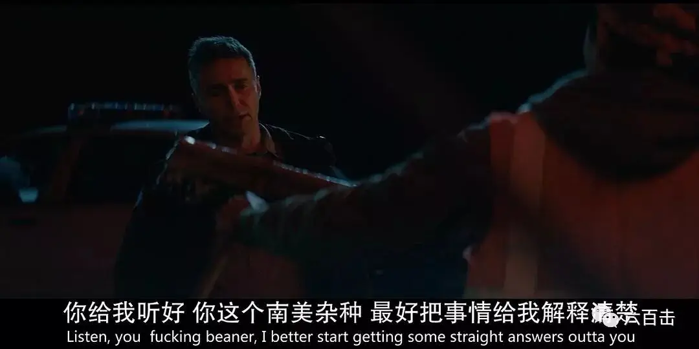
整个警局，也只有威洛夫能镇得住这位“问题”警官。
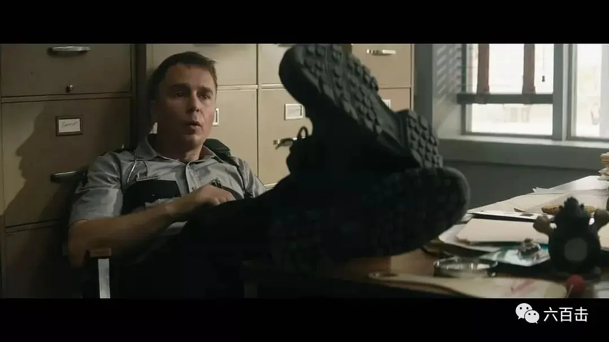
对于米尔德雷德对威洛夫的谴责和施压，狄克森深恶痛绝，他对米尔德雷德百般刁难，甚至越过警察底线用言语和暴力阻挠米尔德雷德。
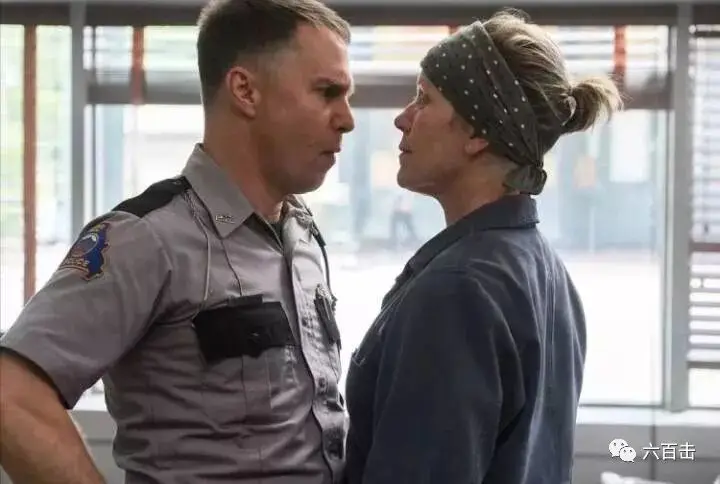
不论是暴力，还是同情，这一切都未能击倒这位倔强的母亲，米尔德雷德为追求正义死磕到底。
导演也借着这场“追问”见缝插针，以小见大地反映了美国的社会问题。
看上去无比强大的米尔德雷德在婚姻中却遭受着丈夫的家暴，离婚后米尔德雷德与儿子和女儿相依为命，但是家庭中却充斥着隔阂和争吵。
米尔德雷德与女儿的最后一次对话没有一句祝福，而是谩骂和诅咒。
争吵中，女儿摔门离开，生气地告诉米尔德里德：我希望我在半路被强奸！
米尔德雷德却告诉女儿：是吗？好，我也希望你在半路被强奸！
一语成谶，这成为了米尔德雷德心中永久的遗憾和重担。
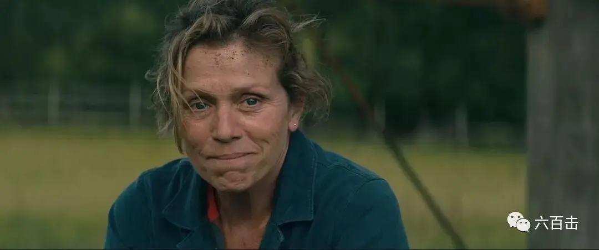
小镇中也充满了岁月静好的虚伪和冷漠，大家对米尔德雷德没有同情，恨不得马上拔掉米尔德雷德这根讨厌的刺。
习惯于安逸生活的大家难以面对这样死磕到底的追问，都希望打着“同情”的口号息事宁人。
在这群对正义漠视的人中，包括牧师。
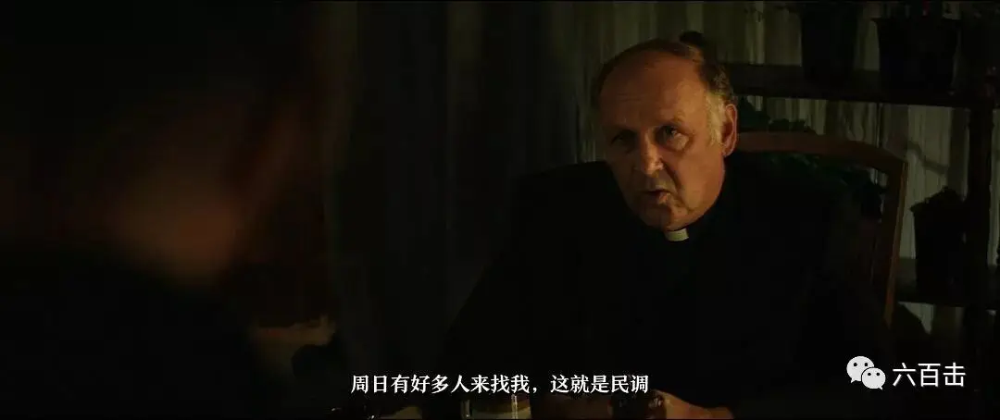
很悲哀的是，教会选择了民调和大多数人，而不是真理。
教会在这件事上失去了先知那样对罪恶的敏感和对正义的疾呼。
虽然只是一个很小的片段，却给了教会很大的提醒，当不公不义发生时，如果教会没有站在最前面，教会就亏缺了上帝的荣耀，失去了做光做盐的见证和力量。
当信仰只是变成一种文化的时候，信仰就不再是信仰，而一旦失去信仰的真实，很多信二代、信三代就会流失。
扮演米尔德雷德的科嫂也是其中一员，科嫂小时候被亲生父母抛弃，而被一位长老会牧师收养，因为父亲要在不同城市牧会，科恩嫂自小跟着养父母到处搬家。
很可惜，成长于宗教家庭的科恩嫂并没有建立信仰，反而在很多作品中充满了大胆的亵渎，这不得不引起我们对美国信仰的反思。
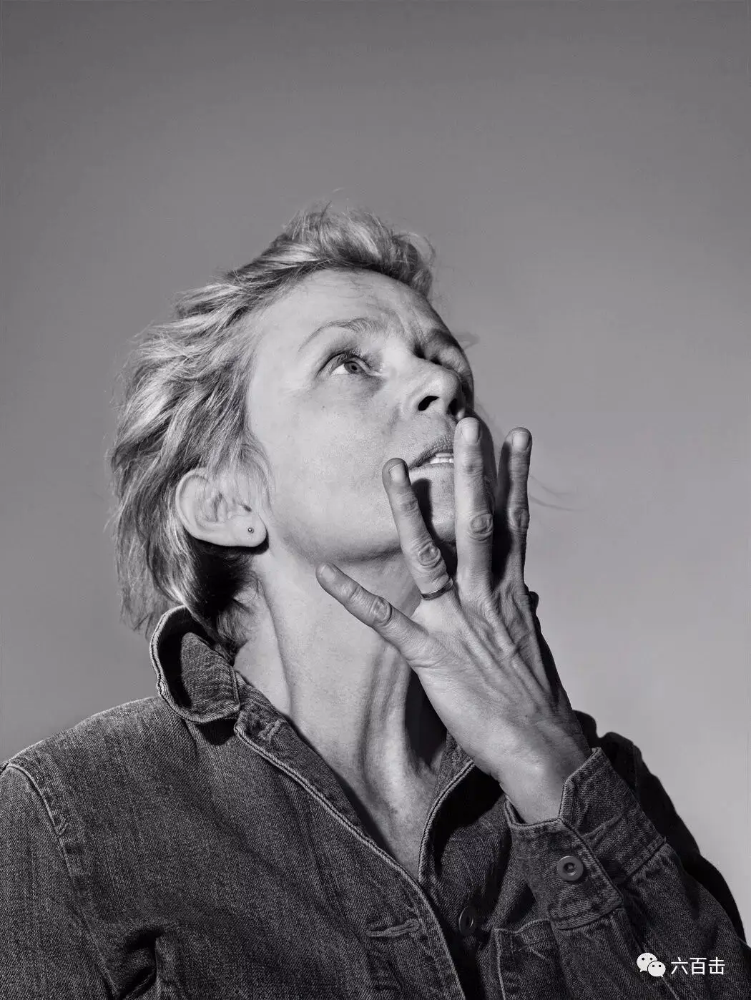
-03- 三封遗书
即使米尔德雷德已经做出了最大的努力，但是案件还是没有任何眉目。
就在此时，罹患癌症的威洛夫警长"突然"自杀，他留下的三封遗书改变了整个剧情，也给暴力和绝望找到了出路。
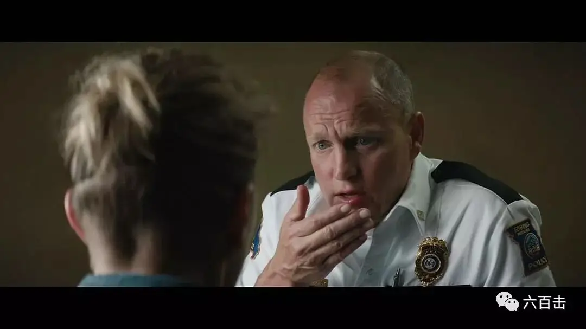
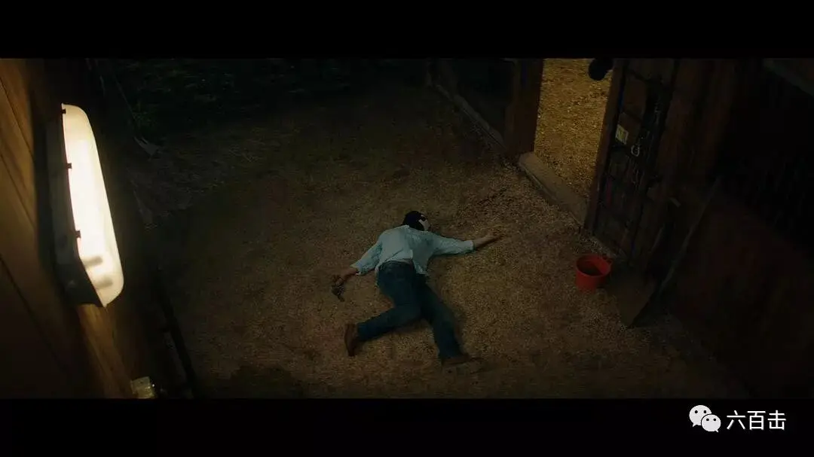
电影用广告牌神奇地将米尔德雷德、威洛夫和狄克森联系在一起，到最后，我们会发现他们有着共同的特质。
那就是三人都对正义有着渴望和追求：
米尔德雷德因为正义没有得到伸张而浑身带刺甚至有些不留情面。
威洛夫因为正义无法实现而倍受责备。
狄克森虽然四处散发着“丧”和“暴力”，但内心深处掩藏着正义和良知。
就因为真相无法大白，三个“好人”不得不“扭打”在一起。
而电影始终没有给你真相，你在这部作品中得不到冤屈被昭雪的快感以及凶手被惩治时的畅快。
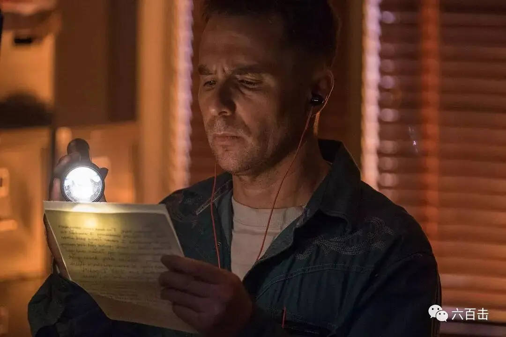
而这也更真实，实际的社会和生活中，正义和真相的确常常是缺席的，这一点，我们最近体会最深。
导演就是要把这块大大的石头压在每个人的心坎上，让你去面对：当正义缺席时，出路在哪里？
导演借着威洛夫给出了答案，那就是“爱”。
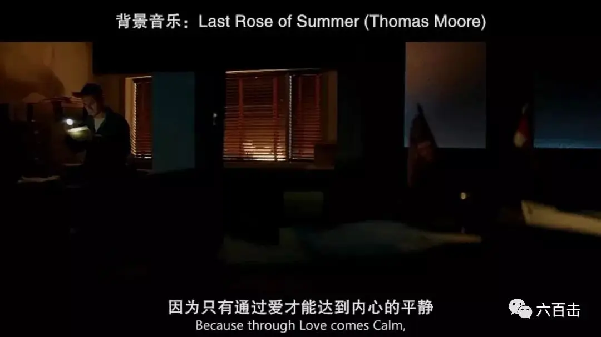
一个追求正义的人一定是一个有爱的人，一个有爱的人也一定是一个充满正义的人，正义和爱是缠绕在一起的灯芯，当正义缺席，爱是唯一支撑我们走下去的力量。
电影最终很精准地停在了该停的位置，无处不在的暴戾也控制在最合适的范围内，没有过火也没有沉寂，没有真相也没有放弃。
米尔德雷德和狄克森还在通向正义和真相的路上狂奔，那一刻，他们笑的最灿烂。
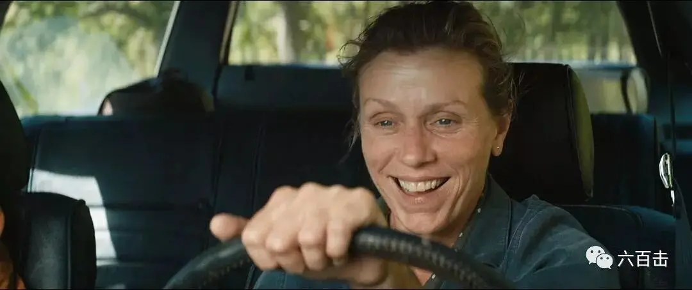
相关推荐：
《史达林之死》| 苏联领导班子疯狂「 革命」史
卓别林最后的演讲
光影圣徒罗伯特.布列松 | 他是最伟大的法国导演，是大师中的大师
《超脱》| 我的灵魂失语了
官方说法
100双绝望的眼睛
这里没有挑逗你眼目情欲的小鲜肉
也没有挑动你肉体情欲的段子
更没有膨胀你今生骄傲的鸡血
我们只在乎那些最质朴真诚的作品
在那里我们才能恢复真正的想象力
我们也坚信这才是我们真正需要的

ID:Six_hundred_hits
长按二维码，一键关注
【六百击】
-END-
电影评论
尽情分享朋友圈

苹果打赏通道